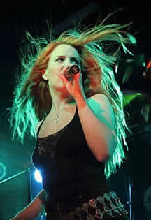
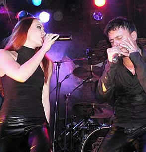

Entrevista
de Simone Simons à Thiago Pinto Corrêa Sarkis
O que vocês acharam de gravar o Programa do Jô no Brasil e de se apresentarem para mais de nove milhões de telespectadores? Foi incrível realizar a gravação sabendo que tantas pessoas estariam nos acompanhando. Não conversei muito com o Jô, mas ele é legal e ficou bastante impressionado com o Epica. Acho que o programa já terá sido transmitido quando essa entrevista for publicada, e espero sinceramente que os brasileiros tenham gostado de nossa performance, e venham nos ver ao vivo em dezembro.
Antes de vir ao Brasil, o Epica lançou dois trabalhos novos. O primeiro deles o álbum The Score. O que você poderia nos dizer desse projeto de Mark Jansen e da ausência de seus vocais no CD? Este álbum foi originalmente composto para um filme holandês chamado Joyride. Porém, nossa gravadora européia, a Transmission Records, teve a idéia de lançar um disco do Epica contendo apenas músicas instrumentais, para filmes, já que muitos de nossos fãs gostam deste elemento cinematográfico bem característico do som da banda. Felizmente recebemos ótimas respostas a The Score e se houver um próximo trabalho no mesmo estilo, com certeza cantarei as músicas.
Temos também o single Quietus. Gostaria que você nos falasse um pouco mais sobre este lançamento e também o porquê de terem disponibilizado o mesmo em duas versões. Quais as diferenças entre elas? De fato temos dois novos singles. Um deles contém duas faixas, e o outro vem com quatro canções. O primeiro traz apenas Quietus, e a bônus inédita Linger, que vocês brasileiros conferiram com exclusividade, já que foi a segunda música que tocamos no "Programa do Jô". O segundo é um "maxi-single" com duas versões bem distintas tanto para Quietus quanto para Crystal Mountain. Acho que as pessoas não esperavam que gravássemos essa última música, pois é uma composição da banda Death, e o estilo deles era bem diferente do nosso. Porém, é uma das músicas favoritas de Mark, e ficou fantástica com as orquestrações preparadas por Yves.
O Epica está também apresentando um novo videoclipe aos fãs, para a faixa-título do single Quietus. Como foram as gravações e o que você achou do resultado final? É sem dúvida alguma o melhor videoclipe do Epica gravado até hoje. Todos ficamos muito felizes com ele. Particularmente, amo gravar videoclipes, pois acho que é uma parte importante de todo o produto e do trabalho de uma banda. Sempre levo minhas idéias para os diretores e tento representá-las perfeitamente. Desta vez, no entanto, meu avô morreu no dia em que começamos as gravações. Eu estava muito triste, mas me dediquei ainda mais, para que ele se orgulhasse. Chorei muito no estúdio, e tínhamos que arrumar a maquiagem o tempo inteiro.
Em Junho você teve problemas de saúde e infelizmente o Epica foi obrigado a cancelar alguns shows. Como foi isso, e também a sua recuperação? Seus fãs ficam apavorados quando lêem essas notícias, posso dizer-lhes que você já está ok? Claro, faça isso, por favor. (risos) Fico feliz em ver a preocupação que os fãs demonstram quando tenho qualquer problema, é algo reconfortante. O Epica tem uma agenda muito cheia e eu já passei por alguns momentos ruins, mas isso me tornou ainda mais forte. Tenho minhas gripes, como todo mundo, mas estou bem melhor e me cuido bastante, já que meu trabalho depende de uma boa condição de saúde, e minha voz muda quando estou doente. Fiquem tranqüilos, pois estou ótima agora. Temos uma turnê européia e já está chegando a hora dos shows no Brasil e na América do Sul.
O Epica tem uma relação muito interessante com a América Latina. Além do sucesso, o último álbum, Consign To Oblivion, é totalmente inspirado na cultura do povo Maia. De onde vem toda essa admiração? Eu admiro muito as civilizações antigas, mas tenho ligação maior com os egípcios. Mark, porém, é completamente inspirado pela cultura Maia. Ele sabe muito sobre o assunto, leu vários livros e fez questão de ir a museus e ver de perto a arte dos maias, quando tocamos no México.
E finalmente chega a hora de vocês descerem um pouco mais, e tocarem na América do Sul. Nessa turnê o Epica será acompanhado pelo Kamelot, numa parceria que já deu muito certo anteriormente. Como é essa estreita relação entre as duas bandas? Nos damos muito bem, e nossa união é admirada por muitos fãs de heavy metal, e por nós mesmos, claro. Participamos um do álbum do outro nos últimos lançamentos; gravamos um videoclipe, e também excursionamos juntos. É muito bom tocar com o Kamelot, e ter a companhia de músicos tão maravilhosos. Além disso, sempre nos divertimos bastante em turnês.
Você gravou dois duetos com o vocalista do Kamelot, Roy Khan, nas músicas Trois Vierges (Epica) e The Haunting (Kamelot). Como foram essas experiências e quais as diferenças e similaridades que você des- tacaria entre essas duas composições? Trois Vierges é mais uma balada, e foi composta para o filme holandês que lhe falei anteriormente. Na versão original, eu canto toda a música, mas nós queríamos muito que Roy Khan gravasse um dueto comigo, pois a voz dele é realmente especial. The Haunting é mais pesada, tem ótimos riffs, e foi gravada quando o Kamelot estava finalizando o álbum The Black Halo na Alemanha, onde nós também nos encontrávamos, trabalhando em Consign To Oblivion. Eles queriam uma vocalista naquela primeira música de trabalho, e me procuraram. Obviamente eu não perderia a oportunidade, e aceitei o convite.
O Kamelot estará gravando o primeiro DVD de sua carreira durante as apresentações aqui no Brasil, o que torna essa turnê ainda mais especial. Quais as suas expectativas em relação aos shows? Todos nós estamos muito ansiosos para tocar no Brasil, e tenham certeza de que cantarei The Haunting com o Kamelot. Espero que possamos nos divertir muito, e tenho certeza de que isso irá acontecer. Estaremos saindo da Holanda em pleno inverno, congelando, e chegaremos no verão brasileiro; esse já é outro aspecto muito positivo! (risos)
Como o Epica vem lidando com o assédio dos fãs? Especialmente você e Mark Jansen que são, além de tudo, namorados... Nós dois recebemos bastante atenção dos fãs. Com Mark é um pouco diferente, pois as mulheres vão mais longe com ele do que os homens comigo. Tentamos conhecer, conversar, e atender a todos, na medida do possível, mas sempre sem expormos nossas vidas pessoais, e principalmente, nossa relação.
Sua voz encantou pessoas por todas as partes, porém, não há muito como escapar da admiração de todos por sua beleza, e em alguns momentos isso aparece em primeiro lugar. Como administrar essa situação? É algo que te incomoda? Não me incomoda, porém, eu sou uma cantora, não uma modelo. A aparência é muito importante hoje em dia, mas o melhor elogio que posso receber de uma pessoa é quando ela me diz que sou uma boa cantora, pois esse é o meu trabalho. Quero ser boa naquilo que estou fazendo. Depois disso, aí sim presto atenção na maneira como me apresento, inclusive esteticamente.
Por sinal, a ex-vocalista do Epica, Helena Iren Michaelsen, que cantou na banda quando o nome ainda era Sahara Dust, fez um ensaio para a capa de uma recente edição da Penthouse grega. Qual a sua opinião sobre isso? A Playboy holandesa já me convidou, e eu recusei a proposta. Não me vendo pra ninguém. Minha nudez é algo particular, não é para todo mundo ver. Acho que cantar já é uma exposição grande demais, e não vou mais longe que isso. Se Helena quer se apresentar assim, tudo bem, não posso impedí-la.
Sei que você é uma grande admiradora do Nightwish. O que achou da saída de Tarja Turunen da banda? Nightwish e Tarja já não formavam um time vencedor. Não estavam dando certo, e decidiram se separar, mas estou muito otimista. Tarja tem uma ótima voz e já é bastante conhecida. Não temo pelo futuro dela, pois acho que fará sucesso onde quer que esteja. E o Nightwish vai seguir em frente, mas com uma cantora diferente. Sei que vou ter de me acostumar aos novos vocais, porém, tenho certeza de que a qualidade das composições será a mesma.
Simone, muito obrigado pela entrevista, simpatia, e disponibilidade. Estamos felizes em tê-la como atração principal no Whiplash! e esperamos ansiosos pelo Epica no Brasil... Obrigada a todos vocês. Recebo muitas mensagens de fãs brasileiros, e todos eles são muito simpáticos e apaixonados pelo Epica. Já tive a oportunidade de conhecer alguns deles na minha curta estadia no Brasil, e até ganhei um presente. Desde que The Phantom Agony foi lançado, vemos recebendo apoio de vocês, e nunca nos esqueceremos disso. Faremos o nosso melhor show, e transformaremos essas apresentações no Brasil em noites únicas, a serem lembradas eternamente.
Extraída de http://whiplash.net
|